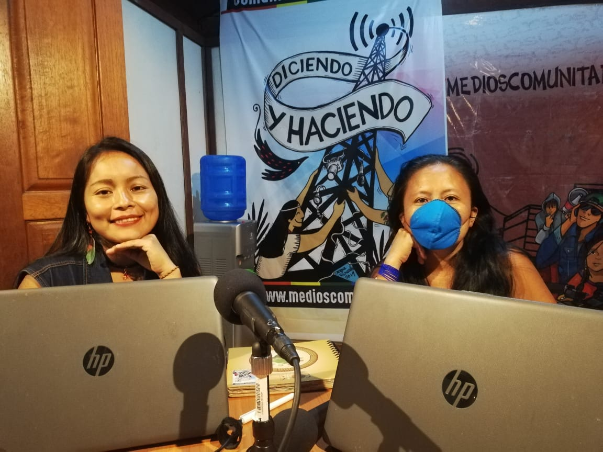
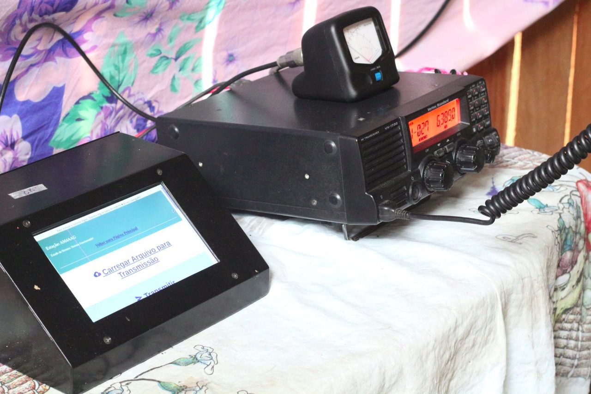

Connected against Covid – how Amazon communities in Brazil and Ecuador are defying the virus
By Nils Brock
This piece is adapted from German. Click for original written and audio versions.
“Then let them arrest us, we are the evil feminists.” Thousands of combative, good-humored women walk through the streets of Quito on March 8, 2020, singing and dancing. In many places rallies and demonstrations take place in the Ecuadorian capital on International Women’s Day. Among the crowd is also the indigenous radio producer Mariana Canelos, collecting impressions and voices for her radio podcast Remando.
At this point, no one suspects that it would be the last big demonstration for a long time. Only a few infections from the corona virus are known at that time in Ecuador. But the spread is rapid. One week later the government imposes a curfew. By this time Mariana is long back in Puyo, a small city in the Amazon. Here she feels quite safe at first. “We never thought the virus would reach us,” Mariana says, looking back. “We thought we were safe here in the Amazon and that a virus from faraway China would never make it this far.”

Retreat to the rain forest
At the beginning of April, tens of thousands of people in Ecuador are already suffering from Covid-19. The health system collapses. The reaction of the indigenous people living in cities: retreat to the countryside. Mariana is also preparing everything for a trip to her home village Sarayaku, which lies deeper in the rain forest. “The idea was to go to Sarayaku with my whole family to seek refuge in the jungle,” says Mariana. “But it was too late. The community, the village council and the shamans had already forbidden entry. So for their own safety we couldn’t go there and stayed in the city, in Puyo.”
Since then, Mariana spends a lot of time on messenger services and social media. The people in Sarayaku also spend more time online. There is no cell phone reception but there is limited satellite-based internet access. In the beginning, lots of emergency care was coordinated this way. In those early days Mariana and her colleague Jiyun produced a few more podcast episodes of Remando. The program is aimed at the women in Ecuador’s Amazon communities and now deals, at least for now, primarily with the question of how the inhabitants of the rainforest can effectively protect themselves from Covid-19. This doesn’t mean the program is only about masks and social distancing rules. Mariana describes her intercultural approach, “we also talk about traditional medicine in the program, like wayusa tea, and many other medicinal plants, for example, that strengthen our spirit and our defenses”. At the same time, the radio makers also obtain information from the local health authorities and then report how many people in the communities in the region have fallen ill. “Our audience grew rapidly. But then people in the community of Unión Base [an area of Puyo] from where we produced our program, also caught the virus, so the radio studio had to close down and we had to stop Remando.”
S.O.S. from Sarayaku
In mid-March, despite all the precautions taken, the first people in Sarayaku, in the middle of the Ecuadorian Amazon, test positive for Covid-19. But just when it comes to coordinating aid, heavy rains and floods severely affect the indigenous community. “There were many difficulties with the internet because the antennas fell down due to all the rain,” says Mariana. Despite the lost connection she continues trying to stay in touch and help from Puyo. “In the city we called for help every day because of the floods and the Covid emergency. Little by little, the Ministry of Health responded.” Sarayaku and the Confederation of Indigenous Nationalities of the Ecuadorian Amazon (Confenaie) also managed to reorganize their self-government capabilities. This kind of help makes it possible for the families to receive adequate care again.
The story of Sarayaku is not an isolated case. Limited access to information and means of communication is a general problem in the Amazon. In the Ecuadorian Amazon there are dozens of local TV and radio stations. However, many remote communities do not have access to electronic media. Rural internet usage is only 38 percent nationwide, but in the rural Amazon this rate is much lower at 3 percent, according to a report by the telecoms regulatory agency Arcotel.
Radio Covid control
Thousands of kilometers east of Sarayaku, in the Brazilian state of Pará, associations of local and indigenous people were working long before corona virus to find ways to better communicate digitally in the sparsely populated forest. Francinaldo Lima, locally know just as Naldo, is an advisor to dozens of local and indigenous communities looking for technologies that are accessible to all residents. “We mainly work with population groups who sustainably manage the forest in the Terra do Meio protected areas. They are called extrativistas in Brazil—people who live off the land.
“In the region, HF radios are the most important means of communication. People use amateur radio frequencies,” explains Naldo. Last year, Naldo and his colleagues also set up three internet access points. In this way a communication network was created that includes HF radio and the Internet. “We also develop certain content to inform about Covid-19, about protective measures and everything that is necessary to prevent a devastating spread in the communities.”
HERMES – a shortwave digital network
In the past, it was only possible to exchange real-time voice messages via HF radio, but last year a local association, in partnership with ISA, a socio-environmental organization, developed an important innovation in cooperation with media activists from Rhizomatica. It is called HERMES. Thanks to HERMES technology on HF/shortwave, digital data can now also be exchanged on the carrier frequency of the HF radios: photos, audios, documents. Although the transmission rates are much lower than for WiFi networks, the range of several hundred s of kilometers is unbeatable, explains HERMES developer Rafael Diniz. And the robust, solar-powered devices are simply a reliable communication channel that does not require any money to operate.
HERMES was originally used to exchange encrypted messages within the protected areas, for example about the intrusion of illegal gold prospectors or loggers. After the outbreak of the corona virus, HERMES quickly found another use to help organize the regional supply between communities in line with Covid restrictions. “I think HERMES is a perfect means of communication, especially in times of Covid,” says Rafael. “It is already being used well here and also offers great potential for all situations where existing communication systems are interrupted. It is the perfect plan B to work independently of other infrastructure.”

Isolated but in contact, for as long as necessary
In the state of Pará, more than 150,000 people have been infected with the corona virus so far. 700,000 cases are now known in the Amazon region. The end of the pandemic is far from sight. The infrastructure for HERMES is therefore in continuous use in the Terra do Meio protected area. Naldo is also taking advantage of an important additional feature of the short wave system. He uses the analogical carrier frequency to broadcast his weekly info podcast Audio Beiradãoto all communities that have no internet connection.
Naldo explains his approach to contain the dangers of massive contagion: “in the program, we recommend people to stay in their communities. At the same time, we have looked for means so that the communities can actually stay in the forest, in their territories and live appropriately.” He coordinates the delivery of food and the construction and dismantling of mobile outpatient health centers week after week. “We also ensure agricultural produce is delivered to the communities so that no one is forced to go to the cities. Radio helps us to communicate with the indigenous communities and to guarantee the quarantine for as long as necessary. “